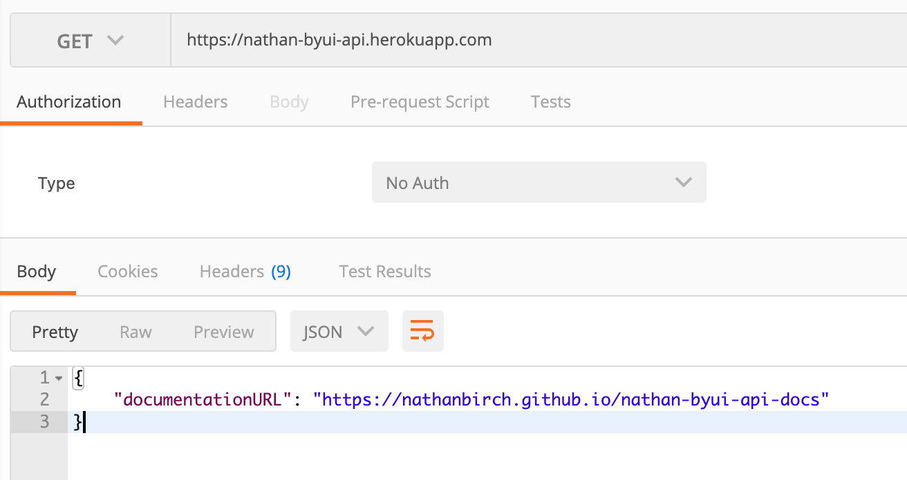
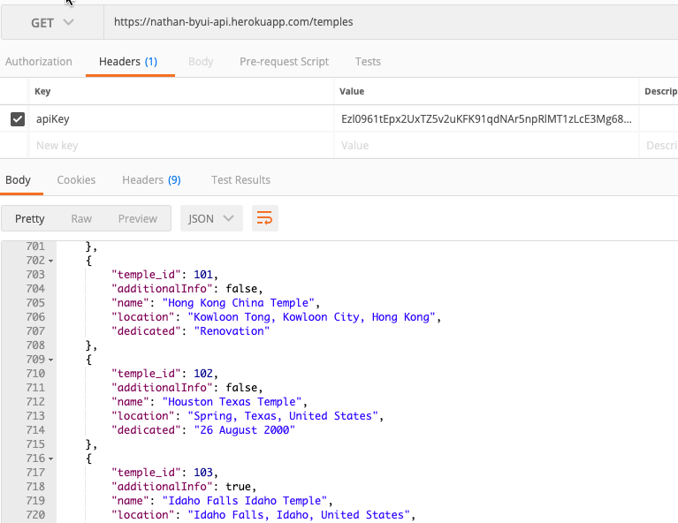
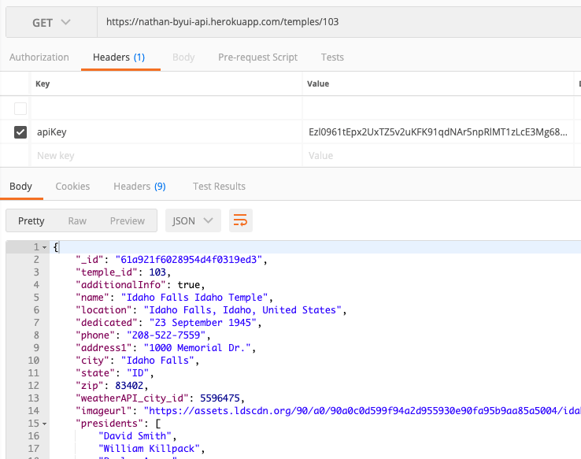

To access data from this api, you must include the apiKey field in the header. The apiKey is:
This url isn't connected to the temple project at all, but is simply the place where the documentation for this api can be found.
This is the url for this API request: https://nathan-byui-api.onrender.com/temples. This will not return detailed data on any temple, but it will return minimal data on every temple in the database. If you do not include the apiKey field in the headers of your request, you will see something like this:
If you include the data in the header as listed above, you will see a response similar to this:
This is the url for this API request: https://nathan-byui-api.onrender.com/temples/{temple_id}. This will return datiled data on the temple with that id. If you do not include the apiKey field in the headers of your request, you will see something like this:
If you include the data in the header as listed above, you will see a response similar to this:
The majority of temples do not have additionalInfo. Use JavaScript to filter through the results from the /temples route to find all temples with additional information. These are the ones you will be needed for projects.